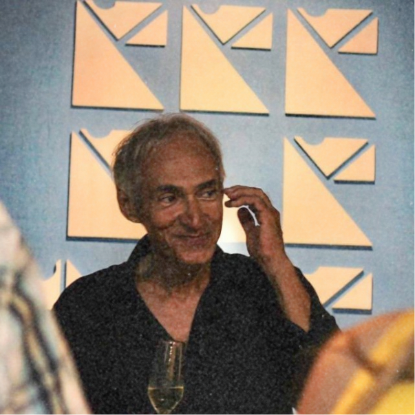

ENTRE DUAS MARGENS
UMA SÓ CORRENTEZA
por CIBELLE VIEIRA
O QUE É A CORRENTEZA?
Entre duas margens, existe um território de encontros, memórias, movimentos e diferentes formas de produzir cultura.
Correnteza é um espaço de travessia por narrativas, artistas, coletivos e lugares que participam da construção cultural do Sertão.
Aqui, a navegação é também um convite para conhecer experiências e descobrir outras formas de representar esse território.
O SERTÃO NÃO CABE EM UMA ÚNICA NARRATIVA.
ESCOLHA SUA TRAVESSIA
À MARGEM
Outras perspectivas sobre o território, suas histórias e suas representações.
ENTRE MARGENS
O território não é apenas aquilo que aparece nos mapas. Ele também é construído por quem vive, circula, cria e transforma os espaços.
Esta página apresenta uma abertura para refletir sobre as representações do Sertão e as narrativas que emergem de seus próprios sujeitos.

LINHA DO TEMPO
Percursos, acontecimentos e transformações que atravessam o território.
O TEMPO TAMBÉM É TERRITÓRIO
A história de um lugar pode ser contada por acontecimentos, lembranças, imagens e experiências.
Esta linha do tempo será construída a partir dos marcos históricos e culturais selecionados para o projeto.
MEMÓRIAS
Narrativas que permanecem e ajudam a compreender as transformações do território.
MOVIMENTOS
Experiências coletivas, manifestações culturais e formas de organização.
PRESENTE
As produções e os sujeitos que continuam construindo outras narrativas.

Construção da Barragem

Círculo Operário de Juazeiro
NÚCLEO BIRUTA
Um espaço dedicado às experiências e produções do Núcleo Biruta.
CULTURA EM MOVIMENTO
Esta página reunirá a apresentação do Núcleo Biruta, sua trajetória e as produções selecionadas para integrar a Correnteza.
COLETIVO ABDIAS
Narrativas, produções e experiências coletivas.
OUTRAS VOZES
Este espaço será dedicado à trajetória, às ações e às produções do Coletivo Abdias selecionadas para o projeto.
CAATINGAYRO
Arte, identidade e formas de expressão construídas no território.
EXPRESSAR O SERTÃO
Esta página receberá as narrativas, os registros e as produções do Caatingayro que compõem a proposta da Correnteza.
ARTISTAS
Pessoas que criam, interpretam e transformam as formas de representar o Sertão.
QUEM CRIA TAMBÉM CONTA
Aqui serão apresentados os artistas participantes do projeto, suas trajetórias e produções.

Ilustração

Coelhão
LUGARES
Espaços de memória, encontros, pertencimentos e transformações.
GEOGRAFIAS DO COTIDIANO
Os lugares guardam histórias que nem sempre aparecem nas representações mais conhecidas de um território.
Nesta página, imagens e narrativas ajudarão a construir outros olhares sobre os espaços que integram a Correnteza.
Ilha do Fogo

Comissão Pastoral da Terra